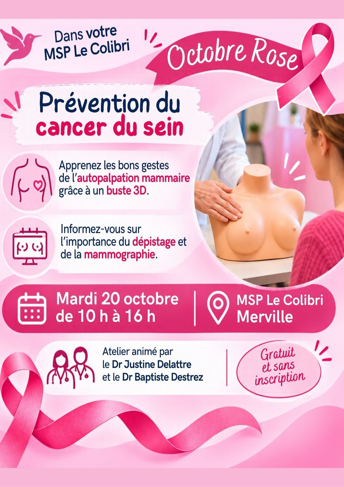

Octobre Rose : prévention du cancer du sein Réalisée
- Date
- 20 octobre 2026, 10h–16h · MSP Le Colibri
- Format
- Atelier gratuit et sans inscription : apprentissage de l'autopalpation mammaire sur buste 3D, information sur le dépistage et la mammographie
- Intervenants
- Dr Justine Delattre, Dr Baptiste Destrez
À compléter : fréquentation, nombre de personnes orientées vers un dépistage ou une mammographie, partenaires, points à améliorer.